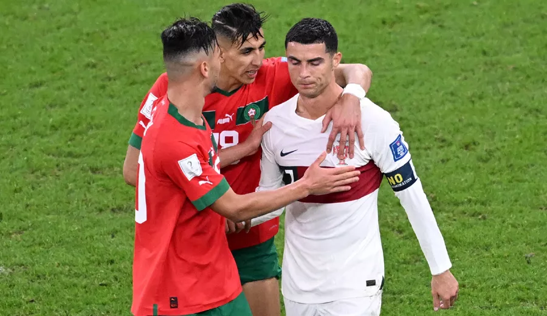

Cristiano Ronaldo Fas Portekiz maçından sonra göz yaşlarına boğuldu, suya düşen hayallerine ağladı
2022 Dünya Kupası'nda Lionel Messi & Cristiano Ronaldo finali gerçekleşmeyecek! Arjantin yarı finalde ama Portekiz çeyrek finale Fas'a elendi. Dünya Kupası tarihinde yarı final gören ilk ülke olan Fas bu büyük başarının tadını çıkarırken 38 yaşındaki Cristiano Ronaldo'nun 2022 Dünya Kupası'nda şampiyonluk yaşayıp futbolu bırakma hayali suya düştü. Portekizli süper yıldızın Fas yenilgisi sonra göz yaşları canlı yayına yansıdı

Fas'ın Portekiz'i 1-0 mağlup ederek elediği 2022 Dünya Kupası
çeyrek final maçından sonra Cristiano Ronaldo göz yaşlarına
boğuldu. Brezilyalı Neymar'ın dünkü üzüntüsü akıllardayken benzer
görüntüleri CR7 de yaşadı.
Cristiano Ronaldo, 1 maça daha
çıkması halinde tüm zamanların en çok milli maç oynayan oyuncusu
olacaktı. Dahası, 2022 Dünya Kupası'nda şampiyonluk yaşayıp
futbolu bırakma hayalini gerçekleştirecekti.
REKORU EGALE ETTI
51. dakikada oyuna dahil olan Ronaldo yeni bir rekor egale etti.
Portekiz Milli Takımı'nın 19 yıldır formasını giyen Ronaldo,
Portekiz formasıyla 196. milli maçına çıkarak, milli formayla en
çok maça çıkan oyuncu unvanını elinde bulunduran Kuveytli Bader
Al-Mutawa‘nın rekoruna ortak oldu.
2022 Dünya Kupası'nda dikkatlerin üzerindeki Cristiano Ronaldo,
İsviçre'yi 6-1 yendikleri maçın ardından Fas ile oynanan çeyrek
final maçında da yedek soyundu.